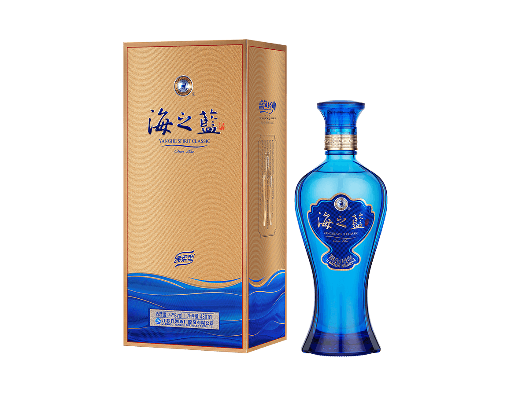

返回首页
中文
English
日本語
中文
English
日本語
海之蓝
海之蓝拥有顺滑清淡的口感，融合花香与谷物香气，甜美平衡，清新爽口的回味，完美适合优雅的场合。

工艺
传统酿造：海之蓝采用经典的洋河传统酿造工艺，经过精心挑选的优质原料，确保酒体细腻，香气自然流淌。
现代科技融合：结合现代技术与传统酿造工艺，精确调控酿造与陈酿过程，使酒体更具平衡性和层次感。
优质原料：精选上等高粱和稻米，加以纯净水源，精细酿造确保每一瓶海之蓝的高品质和口感。
口感
柔和清香：洋河海之蓝的酒体柔和清香，融合了天然的花香与谷物香气，带来清新舒适的饮用体验。
口感顺滑：酒液入口顺滑，带有清甜的口感，细腻的酒香在口中扩展，回味清长，口感更加圆润。
层次感丰富：酒体层次感分明，香气逐步展开，酒味绵长悠远，让每一口都充满愉悦的享受。
外观
瓶身设计：海之蓝的瓶身设计简洁现代，流线型的造型与玻璃材质相结合，彰显高端典雅。
精致包装：包装采用精美的设计，注重细节与质感，给人一种时尚而高雅的感觉，适合送礼或个人收藏。
品牌形象：包装设计融合了现代美学与洋河的品牌精神，体现了品牌的历史传承和创新活力。
其他
高性价比：洋河海之蓝以其高品质与合理的定价成为消费者的优选，不仅满足品味需求，更具超高性价比。
适合社交场合：它是一款适合社交聚会、商务接待等场合的理想饮品，能够提升宴会氛围与品质。
传递品质生活：代表着对品质生活的追求，海之蓝是享受生活、展现品位的不二选择。
适合场景
年轻精英
家庭聚会
商务宴请